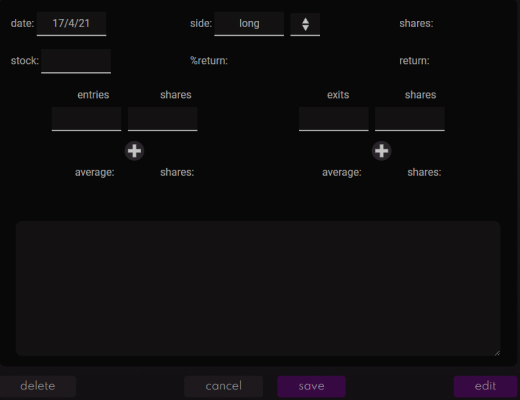
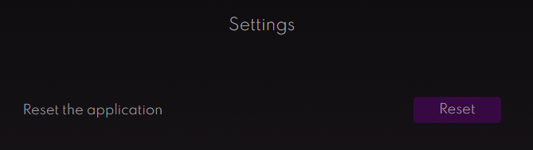
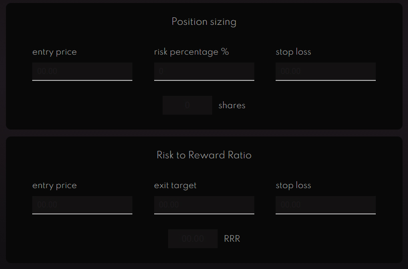
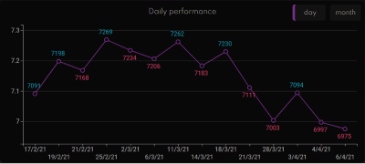
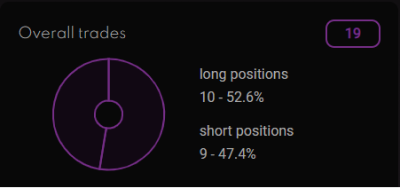
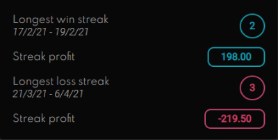
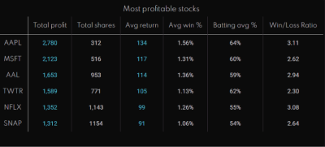
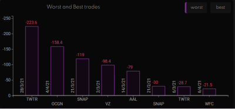
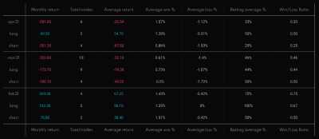

xx/xx/xx
xx/xx/xx
| Total profit | Trades / shares | Avg return | Avg win % | Batting avg % | W/L Ratio |
|---|
| Monthly return | Total trades | Average return | Average win % | Average loss % | Batting average % | Win/Loss Ratio | |
|---|---|---|---|---|---|---|---|
| Monthly return | Total trades | Average return | Average win % | Average loss % | Batting average % | Win/Loss Ratio |
month
wins
losses
Reset the application
The application can be broken down into several stages: Visualisations, Journal and Capital Management. To begin using the application, the account size needs to be entered in the Capital management section, which can be accessed by clicking the calculator icon.
Input your trading account size into the form. If you will be using leverage, specify the leveraged capital that you will be using. When you add or withdraw capital, please update it here as well to ensure the calculations are precise and generate correct statistics.
You are now able to start using the application. You will not able to see any diagrams until you enter your first trade in the Trading Journal, which can be accessed by clicking the pen icon.
All of your recorded trades will appear on the left hand side. To get started, click on the new trade button. This will show a form that needs to be filled in to record every trade. The required data is the date, stock traded, side of the trade (long or short), entries, exits and position size. Each of the inputs that require data has a white bottom border. If you need to add more entries or exits, you can do so with the 'plus' button. You can also enter the descriptive sides of the trade such as your reasoning and emotional state.
The buttons at the bottom of the form are used to save an entry or delete/edit an existing entry. You can select a different journal entry by clicking on one of the other cards on the left side of the form. Know you know how to use the application. There are a few other functionalities that could be useful.
The reset option in the settings can be used to clear all data and start from a complete zero. Be careful with this functionality as the deleted data will be erased from the application.
The 'Capital management' section also consists of a few calculators to help you with your trading. You can use the Risk to Reward ratio calculator to see if the trade is worth taking. The Position sizing calculator can help you determine how many trades you should buy to follow good risk management.
Daily performance: Shows your daily account fluctuations. If you have traded multiple stocks per day, all of the profits and losses will be compiled down into one number for the day. Same applied to the monthly performance that can be viewed by clicking on the button in the upper right corner.
Overall trades: General statistics showing how many trades you have done since joining Tiker and recording your trades in the journal section. You can also see the proportions of long and short positions.
Trading streaks: Shows your best and worst trading runs along with the profit/loss. The provided date shows when the streak happened and can be used to look at the journal trades for that time.
Most profitable stocks: A list of 6 best performing stocks, ordered by the average return. For the stock to qualify, it must have been traded at least three times.
Best and worst stocks: A bar chart showing eight worst single trades, along with the stock ticker and a date. The chart can be toggled in the upper right corner to show eight best single trades.
Monthly report: Displays trading performance from a monthly perspective. The performance is broken down into short and long positions for better trading insight.
Account Risk %: Guideline for much how much of the capital should be risked per trade. It is recommended to choose a percentage between 1 and 2 to manage risk properly and reduce the impact of losing positions on an account.
Batting Average: A statistic that shows how many times you have been right, represented in percentages. For example, if your batting average is 60% on long positions, you have been correct 60% of the time while going long.
Win to Loss Ratio: Represented in decimals, this statistic shows how many winning positions you have had compared to losing trades. For example, if your win to loss ratio is 1.5, you have had one and a half winning positions per one losing position.
Risk To Reward Ratio: Metric used to determine the worthiness of the trade. It takes into account the entry price, exit target and a stop loss. Risk to Reward ratio of at least 2 is recommended to make sure that only quality trades are taken.